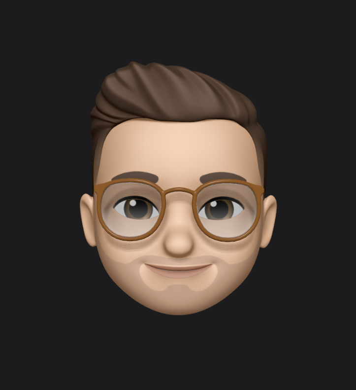

Sono Andrea de Donato, un appassionato ingegnere informatico con una fervente passione per l'innovazione tecnologica. Mi definisco un curioso esploratore del mondo digitale, costantemente alla ricerca di nuove sfide e opportunità nell'ambito dell'informatica. La mia missione è abbracciare la complessità del mondo tecnologico e trasformarla in soluzioni innovative.
Come ingegnere informatico, mi dedico allo sviluppo software, esplorando le intricanti vie dell'intelligenza artificiale. Amo tradurre le idee in codice e vedere prendere vita progetti che hanno un impatto tangibile sulla vita quotidiana. Attraverso l'intelligenza artificiale, cerco di portare l'innovazione a nuovi livelli, esplorando le possibilità di apprendimento automatico e diagnostica intelligente. Nel mio blog, condividerò le mie esperienze, best practices e riflessioni sull'evoluzione del mondo informatico. Unisciti a me in questo viaggio e scopriamo insieme le ultime tendenze, le sfide intriganti e le soluzioni all'avanguardia che definiscono il futuro della tecnologia.